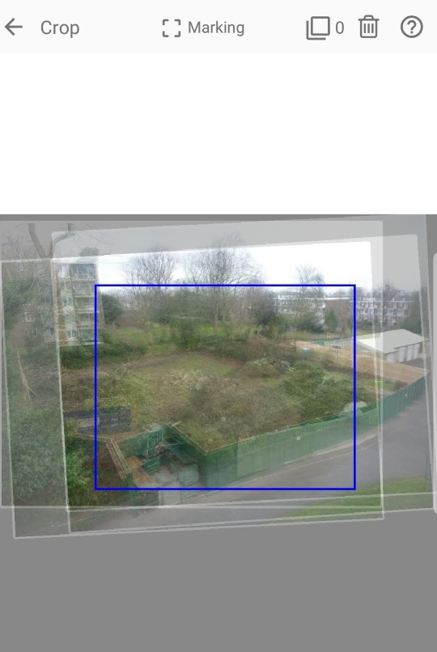
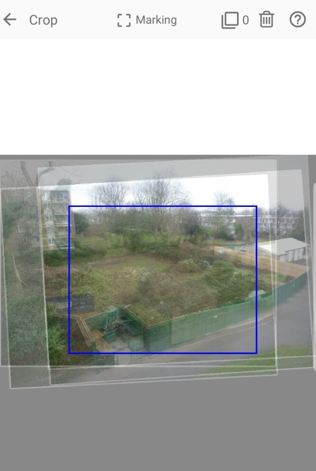

Zoetic2


☰ Contents
Crop
Zoetic uses a user specified crop of the project's "average" image when generating the project's video. The "average" image is made by aligning all the images to the target image and then merging all those images to a single image. Due to the alignment operation, it is very unlikely that all the image boarders will be aligned. In fact the images will probably resemble a very untidy stack of cards. In such cases the user specified crop will partially lie outside some image boarders. (Generally, the wider/larger the crop, the greater the number of images that will not fully cover the crop.)
Two examples showing an average image with a user specified crop, produced from a project of four images. The blue rectangle is the crop. The white rectangles are the image boarders.
 

In the first example, the crop is so large that none of the four images fully covers it. (Note the '4' at the top of the image.) In the second example, the crop has been resized sufficiently so that it is covered by all the images. (Note the '0' at the top of the image.) For the latter case, no background will be exposed in the resulting video. For the former, the user will need to decide on how to handle the exposed background.
- The exposed background may be so small that it is deemed to be not too distracting and hence can be ignored.
- Redo the crop so that it is completely covered by all the images. (As with the above second example.) This will produce a video with no artefacts however, sometimes, to obtain full coverage the new crop may be deemed to be too small or in the wrong location.
- Choose a colour of the background which minimises the distraction e.g. for a project showing a natural landscape, a shade of green may work.
- Zoetic uses an image from earlier in the sequence to cover the background. If the scenes are similar, this approach may work quite well, but if they are dissimilar, weird artefacts may appear.
- Zoetic uses a 'zoomed' version of the image being processed to cover the background. (This is often the approach used by tv news programs where a viewer has submitted a video with a portrait aspect.)
- Zoetic ‘bleed’ the edges of the image being processed to cover the background. Provided the exposed area is not too large, this approach usually works quite well.
The last four options are all available in Zoetic's Settings.
A video showing the different approaches can be found here. The following image is a screenshot from that video. Note the exposed background at the top and the right of the frames and how that area has been processed. The image with the smaller crop (bottom right frame) has a different aspect ratio to the other frames, due to the different aspect ratio of the crop.